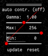

Analyzing Force Generation and Stresses in Cell-Colonies with Clickpoints¶
About this Tutorial¶
Using the pyTFM clickpoints addon requires a complete installation of clickpoints. If you have set up clickpoints correctly, you can open images by right clicking on the image files and select “open with clickpoints”.
You can find a small example data set, which is used during this tutorial, here. The data is in the subfolder “clickpoints_tutorial”. This data set contains raw data for 2 types of cell colonies: In one group a critical cytoskeletal protein has been knocked out. We will compare these cell colonies to a set of wildtype colonies. The raw data, in the form of images, is contained in the subfolders “WT” and “KO”. All output files, databases and plots as you should produce them in the course of this tutorial are stored in the folders “KO_analyzed”, “WT_analyzed” and “plots”. Use these folders to check if your analysis was correct.
The Data¶
As you can see in Fig. 3, there are 6 images for each colony type. This corresponds to two field of views for each wildtype and KO. For each field of view there are 3 images. One image (e.g. 03bf_before.tif) shows the colony and the boundaries between cells. In this case the image shows fluorescence stained cell membranes. The other two images show beads that are embedded in the substrate that the cells lie on. One image was recorded before the cells were removed (03before.tif) and the other was recorded after the cells were removed (03after.tif). The number in front of the filename (“03”, “10” and so on) indicates which field of view that image belongs to.
{kind=link}
Opening Clickpoints and sorting Images¶
The first step to analyze the data is to create a clickpoints database, in which the images are identified correctly, concerning their type (whether it’s an image of the cells or an image of the beads before or after cell removal) and concerning the field of view they belong to. We are going to start with the wildtype data set. To open a database simple right click on an image and select “open with” –> “clickpoints”. The option to open with clickpoints might also be visible directly after you right clicked.
{kind=link}
Clickpoints sorts images in two dimensions: Frames and layers. The frames are displayed in the bar at the bottom. You can skip from frame to frame using the left and right arrows on your keyboard. Layers can be changed with the “Page Up” and “Page Down” keys. When you open the database, you will notice that there is only one layer and every image is sorted into a new frame. Our goal is to sort each field of view into one frame, with three layers per frame, each representing one type of image. In order to do this you need to open the pyTFM addon and open the “select image” menu. Follow the steps described in Fig. 5.
{kind=link}
Fig. 5 A: Open the addon-browser in clickpoints. A new window, with all available addons will open. B: Activate the pyTFM addon by selecting pyTFM and clicking the “Activate” button. A window notifying you that the addon has been loaded successfully will appear. After you press “OK” a new icon will appear in the clickpoints main window to the right of the addon-browser button. C: Click on this button to open the pyTFM addon. D: Finally, open the menu to select images by pressing the “select images” button.¶
The “image selection” menu allows you to do three things: You can select where images are located and how they are classified. You can also set an output folder, where the database file and all analysis results will be saved and you can choose a name for the database. As mentioned above, the analysis requires three types of images. For each type you can select a folder (left hand side) and a regular expression that identifies the image type from the image filename (right hand side).
The default identifiers fit to the example data set, meaning that for now and in the future, if you are using the same naming scheme for your images, you can leave the identifiers as they are.
Note
Details on identifying images
The “‘after’ image identifier” identifies images of beads after cell removal, the “‘before’ image identifier” identifies images of beads before cell removal and the “cell image identifier” identifies images that show the cells or cell membranes. Finally, there is a separate regular expression, the “frame identifier” that identifies the field of view each image belongs to. This must point to a number (e.g. “02” or “2” and so on) in the image filename. This number must be specially marked by brackets “()”. Note that the extension (“.png”,”.tiff”, “.jpeg” …) must not be included in the identifiers.
Regular expressions are the standard way to find patterns in texts. For example, it allows you to identify numbers of certain length, groups of characters or the beginning and end of a text. You find more information on regular expressions here. Some useful expressions are listed in the table below:
search pattern |
meaning |
|---|---|
after |
all files with “after” in the filename |
^after |
all files with “after” at the beginning of the filename |
after$ |
all files with “after” at the end of the filename |
* |
all files |
^(d{1-4}) |
up to 4 numbers at beginning of the filename |
(d{1-4}) |
up to 4 consecutive numbers anywhere in the filename |
(d{1-4})$ |
up to 4 numbers at end of the filename |
Once you have entered identifiers for image types, frames, the output folder and the database name press the “collect images” button. You should see something like this:
{kind=link}
Make sure your database didn’t contain any masks that you don’t want to delete. If you just opened the database from new images, you can press “Yes”. The path to the images that are sorted into the database, the type of the images (layer) and the field of view of the images (frame) are printed to the console. Make sure all images are sorted correctly. The program has generated a new clickpoints database file. Your currently opened clickpoints window updates automatically. You can close the “image selection” window now.
Setting Parameters¶
Lets continue with calculating the deformation and traction field. Go to the pyTFM addon window (Fig. 7).
{kind=link}
In this window you have to set the mechanical parameters of the substrate (“Youngs modulus” and “Poisson’s ratio”), the height of the substrate (“gel height”) and the pixel size (“pixel size”). Then you have to set two more parameters for the calculation of the deformation field. The deformation field is calculated with particle image velocimetry. This method essentially cuts out square shaped patches from the image of the beads before cell removal, places them on the image of beads after cell removal and checks how well they fit together. The vector form the original position of the patch and the position where the patch fits best to the image of beads after cell removal is the displacement vector. This is done for many positions to generate a complete displacement field.
You can control two things: the size of the patch that is cut out of the image of the beads after cell removal (with the parameter “PIV window size”) and the resolution of the resulting displacement field (with the parameter “PIV overlapp”). A window size that is to large will blur the displacement field while a window size that is to small will introduce noise in the displacement field. As a rule of thumb the window size should be roughly 7 times the bead diameter, you should however try a few values and check which window size yields a smooth yet accurate deformation field.
Note
You can measure the beads diameter directly in clickpoints using another addon: The Measure Tool
The “PIV overlapp” mainly controls the resolution of the resulting displacement field and must be smaller than the “PIV window size” but at least half of the “PIV window size”. You need a high resolution for analyzing stress. In this step the area of cells should at least contain 1000 pixels. However, if you are not calculating stresses, you can save a lot of calculation time by choosing a “PIV overlapp” closer to half of the “PIV window size”. Especially, when you are trying out different window sizes, you can set the overlap to the smallest allowed value, which is half of the window size.
For this tutorial you can keep all parameters at their default value. If you are in a hurry, you could set the “PIV window size” to 15 µm.
Calculating Traction and Deformation Fields¶
Once you have set all parameters you can start the calculation: Use the tick boxes in the upper right to select which part of the analysis you want to perform. For now, we are gonna select only “deformation” and “traction forces”. Then use the “apply to” option to choose whether all frames should be analyzed or only the frame that you are currently viewing. Your window should now look like Fig. 7. Finally press “start” in the upper left to begin the analysis. With the default parameters this takes about 5 minutes per frame. “calculation complete” is printed to the console once all frames have been analyzed.
The traction and deformation fields are added to the database as new layers. Switch to these layers using the “Page Up” key on your keyboard. Traction and deformation for the first frame in the wildtype data should look like this:
{kind=link}
If you do not see the display tool and mask names (“membrane”, “force measures”, “FEM area”) on the right press F2.
Quantifying Force Generation¶
Force generation is quantified with the strain energy and the contractillity. You have to select an area on which these measures are to be calculated. You can do this by drawing a mask in clickpoints. In the top right of the clickpoints window you can see a set of tools to draw mask and three preset types of masks. If you don’t see these tools, press F2.
Hint
Tips for masks in clickpoints. Select a mask and use the brush tool to draw it. You can increase and decrease the size of the brush with the “+” and “-” keys. If you want to erase a part of a mask use the eraser tool . Additionally you can fill holes in your mask with the bucket tool . Mask types cannot overlap, which means that you erase one mask type when you paint over it with another type. Sometimes you will have a hard time seeing things are covered with a mask. Press “i” and “o” to decrease and increase the transparency of the mask.
The mask type used to calculate strain energy and contractillity is called “force measures”. Select this mask and draw a circle around all deformations and forces that you think belong to the cell colony. The area you encircle is typically large than the cell colony itself. You don’t need to fill the area you have encircle. This is done automatically. However, if you see the “no mask found in frame ..” warning message in the console, you should first make sure that there is no gap in the circle that you drew. I drew the mask like this:
{kind=link}
It’s no big deal if your selection is a bit to big, but you should make sure not to include deformations and force that do not originate from the cell colony.
You could now press start again, and the program would generate a text file with contractillity and strain energy for all frames. In order to be a bit more organized and get all results in one text file, we will first prepare to analyze stresses in the cell sheet at the same time.
Measuring Stresses¶
The stress is calculated by modelling the cell colony as a 2 dimensional sheet and applying the traction forces that we have just calculated to it. Due to inaccuracies in the traction force calculation, namely that some forces are predicted to originate from outside of the cell sheet, it has proven most accurate to use an area slightly larger than the cell colony, so that it includes all forces that you think originate form the cell colony. To select this area, go to the clickpoints main window and switch layers with the “Page Up” or “Page Down” key until you reach the plot displaying the traction forces. Select the mask “FEM_area” and encircle all forces originating from the cell colony. I drew the mask like this:
{kind=link}
Drawing the mask larger than the area where traction forces are present will lead to an underestimation of stresses, the effect is however quite small for any reasonable mask sizes.
Measuring the Line Tension, counting Cells and measuring the Colony Area¶
Finally, we want to measure forces that are transmitted across cell-cell boundaries. This requires you to mark the cell membranes. You will also get the number of cells in each colony and the area of the cell colony from this selection. Both can be used to normalize stresses and forces.
In the main window of clickpoints switch to the image showing the cell membrane using the the “Page Up” or “Page Down” key, select the mask “membrane” and mark all cell membranes.
Hint
Press F2 and use the controls (see below) in the bottom right to adjust the contrast of the image. This might help you to see the membrane staining better.

Use a thin brush and make sure that there are no unintentional gaps. Also mark the outer edge of the colony. This edges is not included in the calculation of line tensions but is necessary to calculate the correct area and cell count of the colony. I drew the mask like this:

Fig. 11 Mask of cell membranes.¶
Once you have drawn all masks in all frames you are ready to start the calculation. Go to the pyTFM addon window, tick the check boxes for “stress analysis” and “force generation”, make sure you have set “apply to” to “all frames”, untick the “deformation” and traction forces” boxes and press start. The calculation should take about 5 minutes.
After the calculation is complete two new plots will be added to the database. The first will show the mean normal stress in the cell colony and the second will show the line tension along all cell-cell borders. The outer edge of the cell colony is marked in grey. These lines are not used in the calculation.
{kind=link}
Note
A few notes on the calculation of stresses. The average stresses (average mean normal and average shear stress) and the coefficient of variation of these stresses is calculated by averaging over the true area of the cell colony, marked with the mask “membrane”. The mean normal stress should be high in areas where strong forces oppose each other. This can be seen in Fig. 12. Likewise, the line tension is high if strong forces oppose each other across the line. A high mean normal stress does not necessarily indicate a high line tension. It is better to look at the traction forces, when checking if the values for the line tension make sense.
Understanding the Output File¶
Every time you press start the program creates a text file “out.text” in the output folder. If such a file already exists, the text file is named out0.txt, out1.txt and so on. The output starts with a header containing important parameters of the calculation (Fig. 13). This is followed by a section containing all results. Each line has 4 to 6 tab-delimited columns, containing the frame, the id of the object in the frame (if you analyze multiple cells or cell colonies in this frame), the name of the quantity, the value of the quantity and optionally the unit of the quantity and a warning.
{kind=link}
Warnings such as “mask was cut close to image edge” and “small FEM grid” should not be ignored.
Plotting the Results¶
Repeat the same analysis for the KO data set. Once you have the output text files for both data sets you could go ahead and use any tool of your choosing to read the files and plot the important quantities. Of course the best tool to do so is python, where pyTFM provides specialized functions to read and plot data.
First lets import all functions that we need:
from pyTFM.data_analysis import *
Next we read the output files from wildtype and KO data sets. This is done in two steps: First the text files are read into a dictionary where they are sorted for the frames, object ids and the type of the quantity. Then this dictionary is reduced to a dictionary where each key is the name of a quantity and the value is a list of the measured values. Note that our output text file for the last step should be called “out0.txt” if you followed the tutorial exactely.
# reading the Wildtype data set. Use your own output text file here
file_WT = r"/home/user/Software/pyTFM/example_analysis/WT/out0.txt"
# reading the parameters and the results, sorted for frames and object ids
parameter_dict_WT,res_dict_WT = read_output_file(file_WT)
# pooling all frames together.
n_frames_WT,values_dict_WT, frame_list_WT = prepare_values(res_dict_WT)
# reading the KO data set. Use your own output text file here
file_KO = r"/home/user/Software/pyTFM/example_analysis/KO/out0.txt"
parameter_dict_KO,res_dict_KO=read_output_file(file_KO)
n_frames_KO,values_dict_KO, frame_list_KO=prepare_values(res_dict_KO)
We are going to use the dictionaries with pooled values (values_dict_WT and values_dict_KO) for plotting. First let’s do some normalization: We can guess that a larger colony generates more forces. If we assume the relation is somewhat linear it is useful to normalize measures of the force generation with the area of the colony:
# normalizing the strain energy
values_dict_WT["strain energy per area"] = values_dict_WT["strain energy on colony"]/values_dict_WT["area of colony"]
values_dict_KO["strain energy per area"] = values_dict_KO["strain energy on colony"]/values_dict_WT["area of colony"]
# normalizing the contractillity
values_dict_WT["contractillity per area"] = values_dict_WT["contractillity on colony"]/values_dict_WT["area of colony"]
values_dict_KO["contractillity per area"] = values_dict_KO["contractillity on colony"]/values_dict_WT["area of colony"]
Note that this only works if force generation and area were calculated successfully for all colonies.
Now we can perform a t-test to check if there are any significant differences between KO and WT. We will do this for all value pairs at once and later display only the most important ones value pairs. Unfortunately, due to the the fact that we analyzed only two colonies per data set you will find no significant diffrence in this case.
# t-test for all value pairs
t_test_dict = t_test(values_dict_WT,values_dict_KO)
Let’s produce some plots. First, we are going to compare some key measures with box plots. The function “box_plots” expects two dictionaries with values, a list (“labels”) with two elements, which identifies these dictionary and a list (“types”) of measures that you want to plot. Additionally you can provide a dictionary containing statistical test results and specify your own axis labels and axis limits:
lables = ["WT", "KO"] # designations for the two dictionaries that are provided to the box_plots functions
types = ["contractillity per area", "strain energy per area"] # name of the measures that are plotted
ylabels = ["contractillity per colony area [N/m²]", "strain energy per colony area [J/m²]"] # custom axes labels
# producing a two box plots comparing the strain energy and the contractillity in WT and KO
fig_force = box_plots(values_dict_WT, values_dict_KO, lables, t_test_dict=t_test_dict, types=types,
low_ylim=0, ylabels=ylabels, plot_legend=True)
We can do the same for the mean normal stress and line tension:
lables = ["WT", "KO"] # designations for the two dictionaries that are provided to the box_plots functions
types = ["mean normal stress on colony", "average magnitude line tension"] # name of the measures that are plotted
ylabels = ["mean normal stress [N/m]", "line tension [N/m]"] #
fig_stress = box_plots(values_dict_WT, values_dict_KO, lables, t_test_dict=t_test_dict, types=types,
low_ylim=0, ylabels=ylabels, plot_legend=True)
Another interesting way of studying force generation is to look at the relation between strain energy (beeing a measure for total force generation) and contractillity (beeing a measure for the coordinated force generation) This can be done as follows:
lables = ["WT", "KO"] # designations for the two dictionaries that are provided to the box_plots functions
# name of the measures that are plotted. Must be length 2 for this case.
types = ["contractillity per area", "strain energy per area"]
# plotting value of types[0] vs value of types[1]
fig_force2 = compare_two_values(values_dict_WT, values_dict_KO, types, lables,
xlabel="contractillity per colony area [N/m²]", ylabel="strain energy per colony area [J/m²]")
Finally, let’s save the figures.
# define and output folder for your figures
folder_plots = r"/home/user/Software/pyTFM/example_analysis/plots/"
# create the folder, if it doesn't already exist
createFolder(folder_plots)
# saving the three figures that were created beforehand
fig_force.savefig(os.path.join(folder_plots, "forces1.png")) # boxplot comparing measures for force generation
fig_stress.savefig(os.path.join(folder_plots, "fig_stress.png")) # boxplot comapring normal stress and line tension
fig_force2.savefig(os.path.join(folder_plots, "forces2.png")) # plot of strain energy vs contractillity